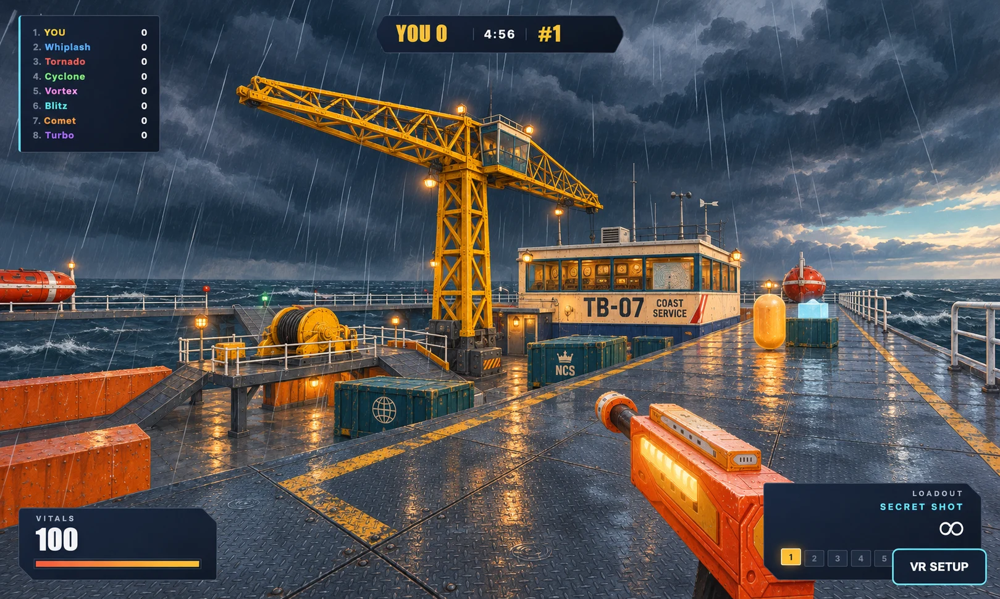

Tidebreaker
An Atlantic rescue station between surges. Compare the evacuation catwalk, the operations block, and the helideck.
Revised gameOriginal game
The paintover

Generated from the original catwalk screenshot. The slider above shows the playable result.
Open the game · Blast Complex study · Atrium study